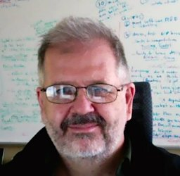
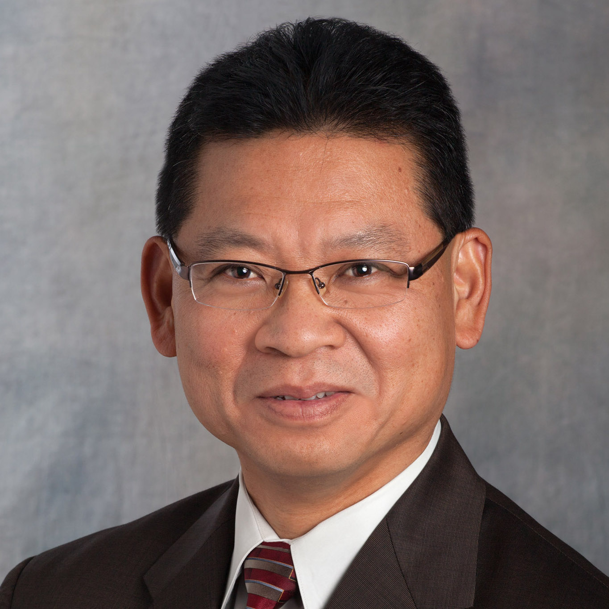

Keynote Speakers

Tim Menzies
Title: AI software is software and we, as software engineers, have to understand how to use and refactor and modify it
Abstract: Much of SE treats AI as some kind of off-the-shelf service where SE researchers and practitioners use tools, without modification, imported from the AI community. That approach is pragmatically appealing since, that way, SE people do not need a deep understanding of those AI tools. Nevertheless, I would encourage you **not** to do that since SE needs a different kind of AI. Certainly, these new AI tools can be based on standard AI methods. But before we race to apply methods from other communities, we need to first reflect on what our community needs and knows and wants. And if we do that, then we arrive at a better kind of AI for SE. To back up this argument, I will discuss applications from NASA flight control software, software text mining and sentiment analysis, software process planning, information retrieval, software quality prediction, software issue mitigation, software configuration, search-based software engineering, hyperparameter optimization, software bias mitigation.
Bio: Tim Menzies (IEEE Fellow, Ph.D., UNSW, 1995) is a full Professor in CS at North Carolina State University where he teaches software engineering, automated software engineering, and foundations of software science. He is the directory of the RAISE lab (real world AI for SE). that explores SE, data mining, AI, search-based SE, and open access science.
He is the author of over 280 referred publications and editor of three recent books summarized the state of the art in software analytics. In his career, he has been a lead researcher on projects for NSF, NIJ, DoD, NASA, USDA (funding totalling over 12 million dollars) as well as joint research work with private companies. For 2002 to 2004, he was the software engineering research chair at NASA's software Independent Verification and Validation Facility.
Prof. Menzies is the co-founder of the PROMISE conference series devoted to reproducible experiments in software engineering (http://tiny.cc/seacraft). He is an associate editor of IEEE Transactions on Software Engineering, Communications of the ACM, ACM Transactions on Software Engineering Methodologies, Empirical Software Engineering, the Automated Software Engineering Journal the Big Data Journal, Information Software Technology, IEEE Software, and the Software Quality Journal. In 2015, he served as co-chair for the ICSE'15 NIER track. He has served as co-general chair of ICSME'16 and co-PC-chair of SSBSE'17, and ASE'12.

Michael S. Mazzola
Title: Back to the Future: How the decarbonized electric grid of 2050 will be built on a model from 1897
Abstract: In 1894 a former secretary to Thomas Edison by the name of Samuel Insull was visiting Brighton England on Christmas holiday. Insull was then President of the unprofitable Chicago Edison, a rather small electric utility in Chicago, a city crowded with other competing utilities. He was astonished to learn that the company providing electricity to Brighton had time-of-use electricity rates. This pricing model allowed Insull in 1897 to work out how to increase the load factor of his utility by selling electricity during low-demand period at reduced rates. This increased the sales of electricity at a time when the expensive capital equipment would otherwise be idle. This in turn led to the growth of his utility empire through the socio-technical model of economies of scale. But initially Insull’s model required the participation of consumers to make it work. Later, the rise of state regulation of so-called natural monopolies returned the pricing model to generally flat electricity rates (with exceptions) in return for a duty to serve the customer by the utility. For residential customers this is largely the model of 2022, and it has allowed the electrical grid to become the most critical of all infrastructure. In other words, the reliability of electrical service has enabled a way of life that can tolerate interruption of electrical service for only short periods of time. However, the need, and in North Carolina the legal requirement, to evolve the electric grid to be carbon neutral has led many planners to realize that Insull’s model of consumer participation will once again underpin the operation of the electric grid. And since the grid will become even more critical to the workings of the economy through the electrification of most aspects of the energy economy, this introduces the duty to participate by the consumer as essential to maintaining reliability. This presentation will describe how IOT technologies will allow consumers to fulfill their duty to participate by assisting a grid dependent on variable renewable energy resources with load flexibility. New software-controlled, grid-edge technologies are needed to develop and mature vast new socio-technical systems of secure and ethical automation that understands human behavior and that allows utilities to work with consumers to jointly control the electric grid of 2050.
Bio: A native of Virginia, Dr. Michael S. Mazzola received his Ph.D. in electrical engineering from Old Dominion University in 1990. In July of 2017 he was appointed the Executive Director of the Energy Production and Infrastructure Center (EPIC) at the University of North Carolina Charlotte and the Duke Energy Distinguished Chair of Power Engineering Systems.
Prior to these appointments he was a professor of electrical and computer engineering at Mississippi State University and the Jack Hatcher Chair for Engineering Entrepreneurship.
In 2009 he was named an Associate Director for Advanced Vehicle Systems at the MSU Center for Advanced Vehicular Systems (CAVS).
From 2005-2007 he was the chief technology officer of SemiSouth Laboratories, a company he co-founded. In 2022 he was named to the Charlotte Business Journal’s inaugural Power 100 list.

Agus Sudjianto
Title: Machine Learning Reliability for High-Risk Applications and Regulated Industry
Abstract: Machine Learning (ML) models are quickly becoming ubiquitous and widely embedded in many banking software for mission critical applications. Testing, validating and monitoring for model failure are key activities before and after model deployment as model errors can create significant risk. As models in production will operate under constantly changing environment, model design and testing must include model stress testing evaluation including their robustness, reliability and resilience.
Bio: Agus Sudjianto is an executive vice president, head of Model Risk and a member of Management Committee at Wells Fargo, where he is responsible for enterprise model risk management.
Prior to his current position, Agus was the modeling and analytics director and chief model risk officer at Lloyds Banking Group in the United Kingdom. Before joining Lloyds, he was an executive and head of Quantitative Risk at Bank of America.
Prior to his career in banking, he was a product design manager in the Powertrain Division of Ford Motor Company.
Agus holds several U.S. patents in both finance and engineering. He has published numerous technical papers and is a co-author of Design and Modeling for Computer Experiments. His technical expertise and interests include quantitative risk, particularly credit risk modeling, machine learning and computational statistics.
He holds masters and doctorate degrees in engineering and management from Wayne State University and the Massachusetts Institute of Technology.